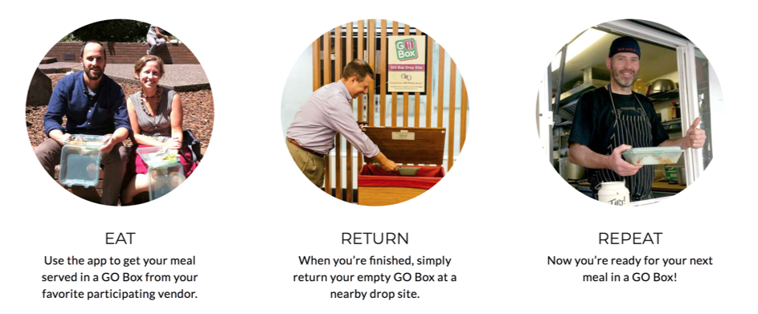
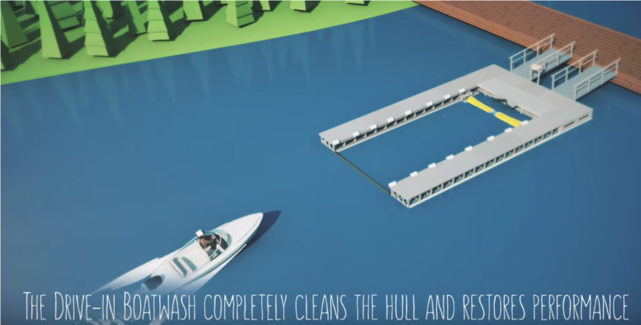
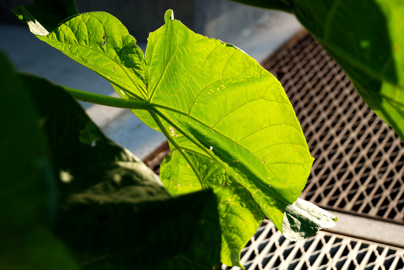

Contents
Step 6 Whole product¶
Goal¶
To drive innovation and not just incremental improvements. To restore natural capital and to use life-friendly chemistry over the entire life cycle of the product. To integrate the product into the circular economy.
Introduction¶
Remember that there is no one tool or metric that used alone is sufficient for credible and meaningful comparisons. As mentioned previously, it is always useful to check one’s assumptions – a product that appears the most sustainable should always be checked against other products and services that perform the same function.
Focusing on materials only may cause a designer to miss truly innovative opportunities. There’s an opportunity for designers who wish to create sustainable solutions to develop disruptive innovations. By disruptive innovations we mean new products that provide the same function as old products but in a very different and potentially much improved way. See the examples below on disruptive products. The GO Box turns the need for disposable single use packaging on its head. And the Drive-in Boatwash can eliminate the need for biocidal boat paints altogether.
PrISM can help give you insight into all aspects of your product’s life cycle. Critically, it can also help you identify what you don’t know about your product. Honing in on missing pieces of the puzzle will highlight areas that need additional or deeper evaluation, opportunities for innovation and improvement or where your product really shines.
Innovative Approaches¶
In some cases, there may be entirely different pathways to achieving the desired function. What other products or services achieve what your product will? Innovation does not need to occur only at the chemical level. In the examples below, different kinds of innovation that can lead to disruptive new products in the marketplace are described.
Design innovation. Designing new products to integrate circular economy design principles while reducing the use of toxic chemicals to meet performance needs.
Materials innovation. Achieve performance requirements without toxic additives. Examples may include inherently biodegradable materials, especially in the marine environment and materials that fit within the existing materials management infrastructure. Use of biomass that does not compete with food production such as agricultural wastes can support EOL management via feedstock innovation. How do the materials chosen fit in a circular economy?
Manufacturing innovation. Optimizing the use of materials through processes such as 3D printing. There is need for innovation in manufacturing for new materials such as injection molding and extrusion of biomass feedstock such as paper pulp and bagasse, and for processes that are scalable and low-cost using locally available materials.
End of life (EOL) innovation. Technologies and business models for collecting, sorting, reusing, and recycling plastics that avoid generating waste or toxics. Waste-to-value innovations are needed to convert plastic waste into high value base materials with sufficient purity that they can displace virgin materials and facilitate high value uses of recycled materials.
Examples¶
GO Box¶
One example of an innovative product that is an alternative to single-use food packaging is GO Box. The start-up created a reusable plastic food container to eliminate waste from take-out food from your favorite food trucks. Learn more about GO Box. 
Drive-in Boatwash¶
Drive-In Boatwash is another example of a disruptive innovation. Copper-based antifouling boat paints are common and effective, but they are toxic to aquatic life. The drive-in boatwash is an alternative solution to non-copper-containing boat paints that also reduces the risk to marine life.
Learn more about the Drive-in Boatwash’s visit to Washington State. Visit their website.
 * Boats drive in for automate bottom hull cleaning Image Source: Drive-in Boatwash
Bio-inspired innovations¶
Nature uses life-friendly chemistry to achieve diverse functions. Nature can inspire innovative solutions to today’s sustainability problems. One example is photosynthesis-inspired solar power. Plants convert solar energy into chemical energy, fueling growth. Solar cells perform a similar function, ultimately converting solar energy into electrical energy to power homes, factories, and more.

Image source: Aldo C. Zavala, CC BY ND
Explore asknature.org for ideas relating to your product.
What next?¶
Your innovative ideas may represent an enormous departure from your current product. It will be important to compare your current product and your innovation(s). Numerous tools can assist with this process, like life cycle assessment (LCA) and chemical hazard assessment (CHA). If you are not sure which resources and tools to start with, use PrISM on the innovative alternative to identify differences. Alternatives Assessment, which is discussed in the introduction, can be a valuable tool for comparing disparate products. The Interstate Chemicals Clearinghouse (IC2) publishes a comprehensive guide to Alternatives Assessment. The Washington State Department of Ecology has published a complimentary guide for small and medium business.